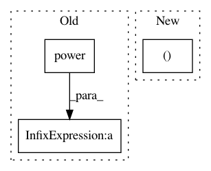

5e76b6981d0b48def00d4fa97caec24accf402fd,contents/5.2_Prioritized_Replay_DQN/RL_brain.py,Memory,sample,#Memory#,116
Before Change
self.beta = np.min([1, self.beta + self.beta_increment_per_sampling]) // max = 1
min_prob = np.min(self.tree.tree[-self.tree.capacity:]) / self.tree.root_priority
maxiwi = np.power(self.tree.capacity * min_prob, -self.beta) // for later normalizing ISWeights
for i in range(n):
a = segment * i
b = segment * (i + 1)
lower_bound = np.random.uniform(a, b)
idx, p, data = self.tree.get_leaf(lower_bound)
prob = p / self.tree.root_priority
ISWeights.append(self.tree.capacity * prob)
batch_idx.append(idx)
batch_memory.append(data)
ISWeights = np.vstack(ISWeights)
ISWeights = np.power(ISWeights, -self.beta) / maxiwi // normalize
return batch_idx, np.vstack(batch_memory), ISWeights
def update(self, idx, error):
After Change
v = np.random.uniform(a, b)
idx, p, data = self.tree.get_leaf(v)
prob = p / self.tree.total_p
ISWeights[i, 0] = np.power(prob/min_prob, -self.beta)
b_idx[i], b_memory[i, :] = idx, data
return b_idx, b_memory, ISWeights
In pattern: SUPERPATTERN
Frequency: 3
Non-data size: 3
Instances
Project Name: MorvanZhou/Reinforcement-learning-with-tensorflow
Commit Name: 5e76b6981d0b48def00d4fa97caec24accf402fd
Time: 2017-08-16
Author: morvanzhou@gmail.com
File Name: contents/5.2_Prioritized_Replay_DQN/RL_brain.py
Class Name: Memory
Method Name: sample
Project Name: dit/dit
Commit Name: 37bcd82863fb96b0350c3a54dda63721784a99f0
Time: 2018-11-06
Author: ryangregoryjames@gmail.com
File Name: dit/divergences/generalized_divergences.py
Class Name:
Method Name: double_power_sum
Project Name: jadore801120/attention-is-all-you-need-pytorch
Commit Name: f9f4587661731a334408d94a6bb79593a088c444
Time: 2019-11-28
Author: jadore801120@gmail.com
File Name: transformer/Optim.py
Class Name: ScheduledOptim
Method Name: _get_lr_scale